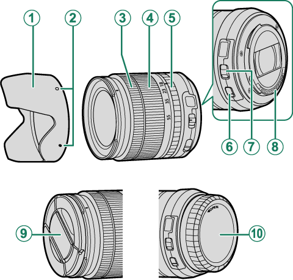
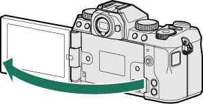
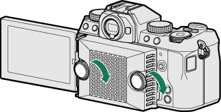
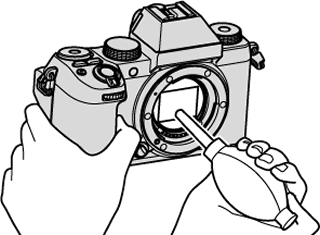
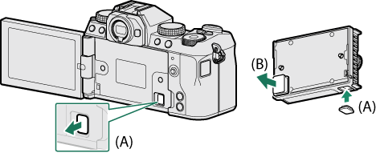
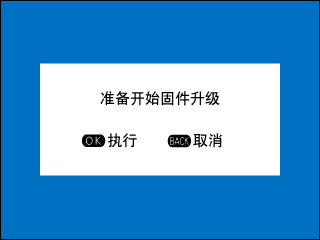
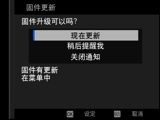

Ⅰ 本课目标Objectives
- 01认全 X 卡口镜头的部件，分清带光圈环 / 无光圈环 / 带 O.I.S. / 手动对焦 / 电动变焦五类
- 02知道外接闪光灯与散热器的选配逻辑与安装方式
- 03会正确清洁机身、镜头与图像传感器
- 04安全地升级固件（三种方法 + 四条禁忌）
- 05用故障排除表与警告信息表自行定位 90% 的常见问题
- 06完成结业自测：随机指令清单
- X-S20
- 吹气球
- 柔软的干布 / 镜头纸
- 读卡器（升级固件用）
Ⅱ 镜头：X 卡口的五种形态Lenses
X-S20 使用 FUJIFILM X 卡口镜头。同一卡口下有五种操作逻辑完全不同的镜头——认清手上这支属于哪类，比记型号重要得多。

| 部件 | 作用 |
|---|---|
| 镜头遮光罩 | 减少强光眩光，兼作前组保护 |
| 安装标记 | 与机身卡口标记对齐后旋入 |
| 对焦环 | MF 时调焦；部分镜头可前后滑动切换 AF/MF |
| 变焦环 | 改变焦距 |
| 光圈环 | 手动选光圈；转到 A 则交给前指令拨盘 |
| O.I.S. 开关 | 光学防抖开关，优先于机身菜单的防抖设定 |
| 光圈模式切换器 | 推到 Z 后才能用手动旋转光圈环 |
| 镜头信号接点 | 与机身通信，保持清洁 |
| 镜头前盖 / 后盖 | 不用时务必盖上 |
附 五种操作逻辑
| 类型 | 光圈怎么调 | 注意 |
|---|---|---|
| 带光圈环 | 旋转光圈环（A / M 档）；转到 A 时用前指令拨盘 | 把「视频优化控制」设为开可禁用光圈环 |
| 带光圈模式切换器 | 先把切换器推至 Z，再转光圈环 | 否则转动无效 |
| 不带光圈环 | A / M 档下用前指令拨盘 | 可在「命令转盘设定」改派给后拨盘 |
| 带 O.I.S. 开关 | — | 开关推至 ON 才启用防抖；镜头开关优先于菜单 |
| 手动对焦镜头（ clutch 式） | — | 对焦环滑到前端=AF，滑到后端=MF；机身会显示景深指示 |
| 电动变焦（PZ）镜头 | — | 有独立变焦杆与 Fn 按钮，适合 Vlog 平滑变焦 |
镜头保养三条
- 先用吹气球吹掉灰尘，再用柔软干布轻擦；顽固污迹用镜头纸蘸少量清洁剂轻拭。
- 不用时前后盖都盖上；拆下镜头立刻给机身盖。
- 遮光罩既能挡杂光又能保护前组——风光拍摄时基本常装。
Ⅲ 外接闪光灯与散热器Flash & Fan
A 外接闪光灯
热靴可装 Fujifilm 卡口闪光灯。菜单会根据当前状态显示四种不同的设置对象：
| 菜单显示 | 出现条件 |
|---|---|
| 内置闪光灯 | 内置闪光灯已升起 |
| 同步终端 | 内置灯降下，且热靴无灯或不兼容 |
| 插头闪光灯 | 热靴装了 EF-X8 以外的选购闪光灯并已开启 |
| 控制单元（光引闪） | 外接灯作为光学无线指令器时 |
部分闪光灯支持 FP 高速同步（在高于 1/180 s 的快门下也能用），部分可作指令器通过光学无线控制离机灯。操作是「对焦棒选项 + 后指令拨盘改值 + DISP/BACK 生效」。
安全红线
切勿使用在热靴上施加超过 300 V 电压的第三方闪光灯，会损坏机身。另外闪光灯同步速度是 1/180 s，S / M 档下快门必须慢于或等于这个值。
B 散热器 FAN-001
长时间不间断录制视频时，散热器能显著延长录制时间。安装顺序：关闭相机 → 打开显示屏 → 取下机身与风扇的接头盖（机身盖装到风扇上保管）→ 对准螺钉与接头 → 拧紧螺钉。


风扇转速在「拍摄设置 > 冷却风扇设定」与「视频设置 > 冷却风扇设定」里分别调（照片与视频各一份）：自动1（低速）、自动2（高速）、低、高、关闭。高速档可能被录进麦克风。
与「高温自动关机选项」配合使用
「电源管理 > 高温自动关机选项」选高可延长录制，但机身会更热。两个一起用才是长录制方案：散热器 + 高温选项高 + 性能普通。注意官方明确提示：高温下长时间接触机身可能造成低温灼伤，建议上三脚架。
Ⅳ 配件清单与软件Accessories & Software
| 配件 | 型号 | 关键信息 |
|---|---|---|
| 可充电锂电池 | NP-W235 | 多买一块是性价比最高的投资 |
| 双电池充电器 | BC-W235 | +25 ℃ 下充满约 200 分钟；用 30 W 以上电源给相机充电可缩至 150 分钟 |
| 遥控快门 | RR-100 | 2.5 mm 接头，需 Φ2.5→3.5 mm 转接 |
| 立体声麦克风 | MIC-ST1 | 外接录音 |
| 镜头 | XF-/XC 系列 / MKX 电影镜头 | X 卡口专用 |
| 近摄延长管 | MCEX-11 / 16 | 提高放大倍率 |
| 望远倍率镜 | XF1.4X TC WR / XF2X TC WR | 焦距 ×1.4 / ×2.0（仅兼容镜头） |
| 转接环 | FUJIFILM M 转接环 | 玩 M 卡口老镜头（配合第 6 课的转接环设置） |
| 机身盖 | BCP-001 | 未装镜头时保护卡口 |
| 热靴闪光灯 | EF-X500（GN50）/ EF-60（GN60）/ EF-42（GN42）/ EF-X20（GN20）/ EF-20（GN20，仅 TTL） | X500 与 60 支持 FP 高速同步与无线控制 |
| 无线引闪器 | EF-W1 / EF-BP1（电池匣） | NAS 无线标准 |
| 散热器 | FAN-001 | 长录制 |
附 七个能用的软件
| 软件 | 做什么 |
|---|---|
| FUJIFILM XApp（手机） | 无线连接、传图、遥控、固件推送 |
| RAW FILE CONVERTER EX powered by SILKYPIX | 免费 RAW 转换 |
| Capture One Express / for Fujifilm | RAW 转换、连线拍摄 |
| FUJIFILM Tether Shooting Plug-in（Lightroom） | Lightroom 连线拍摄插件 |
| FUJIFILM X Acquire | USB/Wi-Fi 自动下载、设定备份恢复 |
| FUJIFILM X RAW STUDIO | 用机身图像处理引擎在电脑上处理 RAW——与机内 RAW 处理效果完全一致 |
| Fujifilm 官网固件页 | 下载机身/镜头/配件固件 |
Ⅴ 保养：机身、镜头、传感器Care
| 部位 | 正确做法 | 禁止 |
|---|---|---|
| 机身 | 每次用完用柔软干布擦；沾到液体立即擦干 | 酒精、稀释剂等挥发性化学品（会使皮革脱色变形） |
| 显示屏 | 吹气球除尘后软布轻擦 | 刮擦、用力按压 |
| 镜头 | 吹气球 → 软布 → 镜头纸 + 少量清洁剂 | 干擦带沙尘的镜片 |
| 图像传感器 | 先用「用户设置 > 传感器清洁」，去不掉再手动用吹气球 | 刷子或吹风刷（可能损坏传感器） |
| 电池端子 | 柔软干布清洁 | — |


传感器清洁的免责提醒
官方明确：手动清洁过程中若损坏图像传感器，维修或更换需收费。所以顺序永远是：① 机内「传感器清洁」→ ② 吹气球（不接触）→ ③ 若仍有顽固污点，考虑送修而不是自己上棒。判定方法：多张照片在相同位置出现斑点 = 传感器有灰。
另外注意：不要在开机时打开电池盒盖——会让文件编号意外重设（故障排除表明确列出）。换卡换电池前先关机。
Ⅵ 固件更新：三种方法，四条禁忌Firmware
先到 Fujifilm 官网下载最新固件并存到存储卡根目录，然后任选一种方式。
| 方法 | 操作 |
|---|---|
| 开机时更新 | 插入含固件的卡 → 按住 DISP/BACK 并开机 → 更新完成后关机一次 |
| 菜单更新 | 插入含固件的卡 → 设置菜单 > 用户设置 > 固件升级 |
| 手机 App（手动 / 自动） | 用 FUJIFILM XApp 下载并推送；App 2.0.0 以上还能自动下载并在开相机时提示 |
四条禁忌（违反可能导致相机无法工作）
- 电池必须充足——更新中断电是唯一真正危险的情况。
- 更新期间不要关闭或操作相机；完成后才关机。
- 更新期间 EVF 不显示任何内容，请用 LCD 观察进度。
- 更新后无法回到旧版本。新版固件可能让功能与本手册略有差异。
耗时取决于固件大小，最长约 10 分钟。升级前建议先用 X Acquire 备份设定（第 8 课）。


Ⅶ 故障排除：按表查比乱试快Troubleshooting
官方故障排除表分五类。下面挑出最常遇到的，按「症状 → 先查什么」整理成一张速查表。
| 症状 | 按这个顺序查 |
|---|---|
| 相机无法开机 | ① 出厂电池未充电，先充 ② 电池方向插反没 ③ 电池盒盖没关好 ④ 电量耗尽 |
| 若关机后立刻开机屏幕不亮：半按住快门直到屏幕激活 | |
| 相机无反应：取出电池重插（这是官方的「重启」） | |
| 拍摄时没反应 / 按快门不拍 | 卡满 / 卡未格式化 / 接触面脏 / 电池耗尽 / 自动关机 / 用了第三方转接环但没开「无镜头拍摄」 |
| 充电无法开始 | 适配器接线；插头适配器是否接好；电池长期未充电会被禁止充电（安全机制）→ 换新电池 |
| 充电缓慢 | 在室温下充；指示灯闪但没充 = 端子脏 或 电池已老化（查「电池寿命」） |
| 无法对焦 | 主体不适合 AF（镜面、纯色、逆光、烟雾）→ 用对焦锁定或 MF；对焦区域太小 → 放大对焦框 |
| 闪光灯不闪 | ① 闪光灯没升起 ② 电子快门 ③ 电量低 ④ 处于包围/连拍模式 ⑤ 「按键音和闪光」设为关闭 |
| 闪光没照亮主体 | 超出闪光范围 / 手挡住闪光窗 / 快门快于 1/180 s |
| 照片模糊 | 镜头脏或被挡；对焦框是红色（没合焦）；快门太慢（上架子或提 ISO） |
| 照片有斑点 | 高感光 + 高温 → 属正常；可做「像素映射」；持续出现则关机降温 |
| 没检测到脸部 / 对象 | 脸被遮挡、占比太小、没面对相机、功能被关；相机倾斜；光线不足 |
| 视频回放没声音 | 回放音量为 0 / 录音时挡住麦克风 / 回放时挡住扬声器 / 「按键音和闪光」关闭 |
| 删不掉照片 | 照片受保护；需先在最初设保护的设备上解除 |
| 文件编号突然重设 | 相机开机时打开了电池盒盖——这是原因，以后先关机 |
| 电脑识别不到相机 | 换线换口；连接模式选对（X RAW STUDIO / X Acquire 必须选「USB RAW 转换/备份恢复」） |
| 接 iPhone / iPad 连不上 | 「USB 供电/设置」：给不供电的 Lightning 设备用 电源关/通信开 |
| 手机收不到图 / 很慢 | 距离远、附近微波炉/无绳电话干扰、手机连了别的设备（一次只能连一台）、图太大 → 开「调整为智能手机用图像大小」 |
| 按 Q 不显示快速菜单 | TTL 锁定正在生效——先结束锁定 |
| 控制被锁定 | 按住 MENU/OK 解除按键锁 |
Ⅷ 警告信息与温度Warnings
| 屏幕提示 | 含义 | 怎么办 |
|---|---|---|
| 电池图标闪烁红色 | 电量耗尽 | 充电 / 换电池 |
| 对焦框红色 + s | 无法对焦 | 对焦锁定到同距离物体后重新构图，或改 MF |
| 光圈或快门速度显示红色 | 会过曝或欠曝 | 调整参数；暗处用闪光灯补光 |
| 对焦错误 / 镜头控制错误 / 镜头错误 | 镜头与机身通信异常 | 关机 → 取下镜头检查卡口有无异物 → 重装 → 开机；仍报错送修 |
| 卡未初始化 / 卡错误 / 卡保护 / 存储线路繁忙 | 卡未格式化、已损坏或写保护 | 先用相机格式化；解除写保护；仍不行换卡 |
| 写错误 | 记录中取出卡 / 卡速不足 / 空间不足 | 重插卡或重启；录制中切勿拔卡；换更快的卡 |
| 读错误 | 文件损坏或非本机拍摄 | 该文件无法查看 |
| 画面编号已满 | 编号到 999-9999 | 格式化卡 → 画面计数规则改「清零」→ 拍一张 → 改回「连续」 |
| 画面保护 / 无法裁切 / 无法旋转 | 受保护或非本机文件 | 先取消保护 |
| 温度警告（黄色） | 接近允许上限 | 关机降温；噪点可能增加 |
| 温度警告（红色）+ 正在关机 | 达到上限 | 必须关机冷却 |
三条「先别送修」的经验
- 取出电池再装回——官方在「其他」类故障里就是这么写的，多数假死能解决。
- 对焦/镜头错误九成是卡口接触问题：清洁信号接点、重装镜头即可。
- 卡相关错误九成是格式化或卡速问题：相机内格式化 + 换 UHS-II/V30 以上卡。
Ⅸ 容量与规格：几个该记住的数字Capacity & Spec
| 64GB 卡能存多少（近似） | 数量 |
|---|---|
| L 尺寸 JPEG FINE | 约 4080 张 |
| L 尺寸 JPEG NORMAL | 约 6040 张 |
| RAW 未压缩 | 约 1090 张 |
| RAW 无损压缩 | 约 1990 张 |
| RAW 压缩 | 约 2760 张 |
| 4K / 全高清视频（默认比特率） | 各约 158 分钟 |
超过一小时的录制可能自动分成多个文件；32GB 及以下卡上超过 4GB 的视频也会分卷。这些是设计行为，不是故障。
| 规格项 | 数值 |
|---|---|
| 型号 / 有效像素 | FUJIFILM X-S20（FF220002）· 约 2610 万 |
| 传感器 | 23.5 × 15.6 mm APS-C · X-Trans CMOS 4 |
| 卡槽 | SD 单槽，兼容 UHS-II |
| 文件格式 | JPEG（Exif 2.32）· HEIF（4:2:2 10bit）· RAW（RAF）· TIFF |
| 视频编码 | HEVC/H.265 · H.264 |
| 音频 | LPCM 24bit/48kHz（双通道；XLR 可四通道）· MP4 用 AAC |
| 图像尺寸 | L 6240×4160 · M 4416×2944 · S 3120×2080；RAW 7728×5152 |
| 电池 | NP-W235 |
Ⅹ 迁移提示From Sony / Canon
器材与维护，和索尼 / 佳能最不一样的 4 点
- 光圈环优先：这是 X 卡口镜头的标志，也意味着「换镜头就换操作手感」。副厂/无环镜头要靠菜单改派拨盘。
- O.I.S. 开关优先于机身菜单：镜头开关关着，菜单里开防抖也没用。索尼是机身/镜头协同自动判断。
- 固件由 App 推送：XApp 2.0 以上能自动下载并在开相机时提示，比索尼的「下载到卡再按住开机」省事。
- 散热器是官方配件：FAN-001 是 X-S20 长录制的关键，索尼同级别机型多靠机身被动散热。
Ⅺ 结业自测：随机指令清单Final Check
把相机放在手边，掐表做完下面 8 条。每条 30 秒内完成即算通关——这就是「完全掌握」的实际标准。
Ⅻ 课后练习Exercise
-
01
判断：镜头上的 O.I.S. 开关处于 OFF 时，只要在机身菜单里把防抖模式设为「连续」，防抖依然生效。
参考答案
错误。镜头上的防抖开关优先于机身菜单设定；开关在 OFF 时菜单设置不起作用。
-
02
简答：多张照片在同一位置出现同样的斑点，说明什么问题？处理顺序是什么？
参考答案
说明图像传感器上有灰尘。顺序：① 设置菜单 → 用户设置 → 传感器清洁；② 若无效，取下镜头用吹气球手动吹（不可用刷子，损坏传感器需付费维修）；③ 仍有顽固污点则送修。
-
03
选择：升固件时最危险的操作是什么？
参考答案
更新过程中关机或断电（会导致相机可能无法工作）。所以务必用电量充足的电池，期间不操作相机，用 LCD 观察进度，完成后才关机。另注意更新后无法回退旧版本。
恭喜，课程到这里结束
9 课、85 页官方说明书、225 张官方插图。如果你能闭眼说出每个按键的位置、在 30 秒内把相机调成任意场景需要的状态、遇到警告知道先查什么——那这本「说明书」你就不需要再翻了。剩下的，都是出门拍照。
ⅩⅢ 出处与延伸Sources
- 本课对应的官方说明书页面（主教材）
- 镜头 · 外接闪光灯组件 · 散热器 — 周边设备和选购配件
- Fujifilm 的配件 · 可用于本相机的软件 — 配件清单与七个软件
- 产品保养 · 清洁图像传感器 · 安全须知 — 保养与清洁
- 固件更新 — 三种更新方式与禁忌
- 故障排除 · 警告信息和显示 — 五类故障与屏幕警告
- 存储卡容量 · 技术规格 · 链接 · 许可 — 容量、规格与许可信息
- 版权说明
- 本课插图均取自 FUJIFILM 官方在线说明书，© FUJIFILM Corporation，仅用于个人学习。
下一步建议
课程完全部 9 课之后，最有价值的两件事：① 把配套速查卡打印出来放进摄影包；② 定期回看第 3、4、6 课——那三课决定了你 80% 的出片质量。